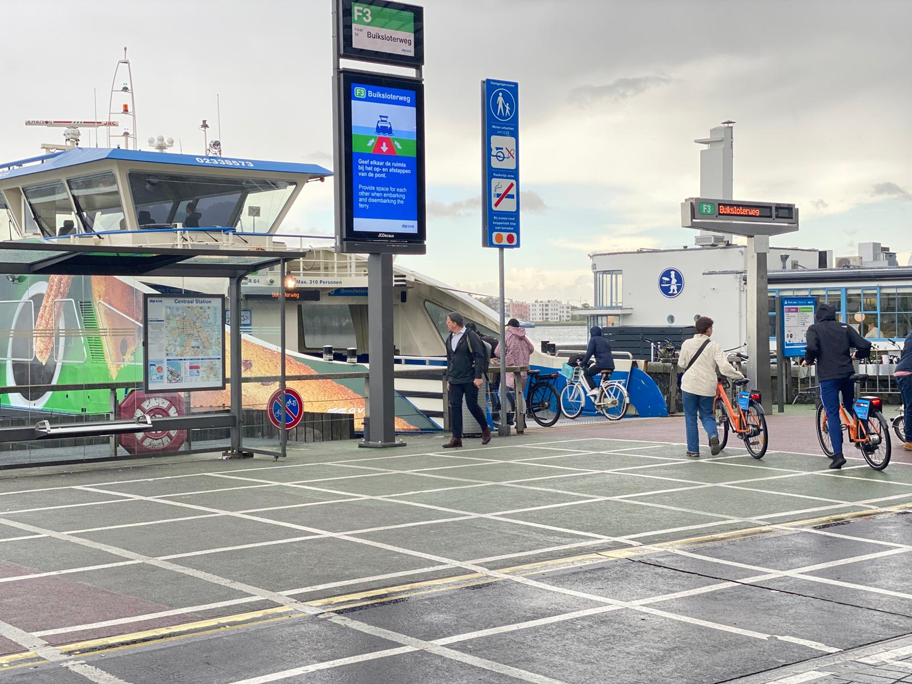

Amsterdam's ferries are important because they are of a big help for commuters to travel for free across the River IJ. They are especially for people walking, riding bikes, or on mopeds. The ferries colour is blue and white and can be found right behind Amsterdam Central Station. They go to and fro many times a day, taking people across the water to places like Amsterdam Noord and NDSM. It's a nice and easy way to cross the river without paying any money.
HOw to get to the Amsterdam Noord
ferry image
How to board the NDSM ferry:
There are three free ferries that take you from the back of Central Station to Amsterdam North, across the IJ River. These ferries run every day of the year, even on holidays. You can also bring your bicycle or moped with you, and it won’t cost anything extra. It's a nice, easy way to get to the other side of the river whenever you need.
The ferry that takes you to Amsterdam Noord is the NDSM ferry, when you get to the ferry terminal you should check for the platform labelled NDSM, then check for the time of the next Departure and wait for your free ferry to arrive.

ferry terminal
Things to do at NDSM:
The NDSM offers a wide array of activities that appeal to both locals and tourists. One of the main attractions is the NDSM Wharf, a vibrant area where creativity and history blend together. The wharf is filled with street art, artist studios, and cultural events, making it a hub for artistic expression. In addition to exploring the wharf, you can take a short walk to the iconic A'DAM Tower, where you'll find a variety of experiences, including a stunning panoramic view of Amsterdam from the observation deck and a thrilling swing that lets you soar over the city’s edge.
Another must-visit spot nearby is the Eye Film Museum. This architectural marvel sits along the IJ River and showcases a rich collection of films, exhibitions, and multimedia presentations. Whether you're a film enthusiast or just looking for a unique cultural experience, the Eye Film Museum offers a deep dive into the world of cinema.
To make your trip even more convenient, the GVB ferry service connects you to the area effortlessly. You can check the GVB ferry timetable to plan your journey across the water, ensuring a smooth trip to and from NDSM and its surrounding attractions.
This website uses cookies to ensure you get the best experience.